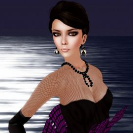
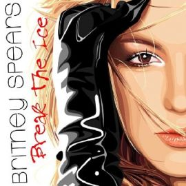
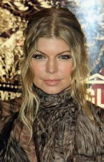
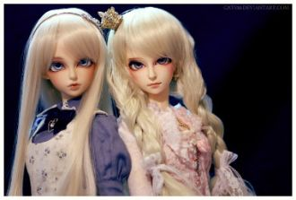

Разгорелась ночка ярко. За зарницею зарница. От чего сердечку жарко. От чего душа томится? Будто споря с тишиною.

Kaşların kara kara da amanın Leyla LeylaGözlerin derde çare de eyle yarim eyleSenin için yanarım da amanın Leyla Leyla

It's been a whileI know I shouldn't have kept you waitingBut I'm here now
Видеть тебя всегдаХочется мне сейчас,Мысли твои читатьВ каждом движенье глаз,А ещё иногдаСлышать дыханье так,
Ах, я уже не верила, не надеялась,Не гадала на любовь.Но что-то ветром с берегаМне навеяло, и моя взыграла кровь.
Слайд в темное и ничего,Я все отдам за него, открою.Так пусто мне, как никогда,С неба по окнам водаНакроет.

I can't go any further then this I want you so badly, it's my biggest wish
Da bambino io sognaidivi eroi e marinainella mente avevo giàla mia idea di libertà.La bambina che era in meora è donna insieme a te
Boy I think about it every night and dayI'm addicted wanna jump inside your loveI wouldn't wanna have it any other way

[Verse 1]It's been said and doneEvery beautiful thought's been already sungAnd I guess right now here's another one
يانا يانا يانا يانايانا يانا يانا يانا في حبيبي امووت انا امووت انا بحبيبي
كلمات اغنية يارا ما بعرف
مابعرف كيف بنظرة بتعمل هيكبتاخدنى ليك وبموت عليك
أيوه فيكم مننا نفس روحنا ودمنا ، قلبنا بيرتاح آوام للي فعلا زينا..
Taking me higher than I've ever been beforeI'm holding it back, just want to shout out, give me more
[Francesco Yates:]OooooohOooooohOooooohOh baby!OooooohOooooohHeeeey...
Sha-la-la-laSha-la-la-laSha-la-la-la
Знаешь, это признаки любви,Если между нами притяженье.В зеркалах - сознанья отраженье.Из мечты -Только Ты,Только Ты.
장미의 미소한두번도 아닌데그대를 만날때면자꾸만 말문이 막혀서담배만 피워댔죠이제야 그대에게사랑한단 말대신한송이 새빨간 장미를두손모아 드려요새빨간 장미만큼그대를 사랑해
I threw a wish in the wellDon't ask me I'll never tellI looked at you as it fellAnd now you're in my way
Oh, no.
[Juicy J:]YeahYa'll know what it isKaty PerryJuicy J, aha.Let's rage